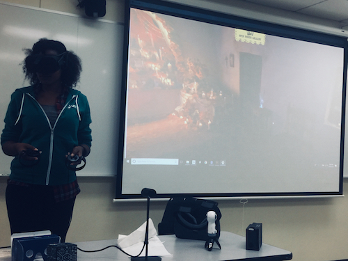

What We Do
Sisterhood
We build lifelong friendships and a network of professional relationships in an inclusive, safe environment.

Professionalism
We develop and nurture our members with strong communication, problem-solving, and leadership skills that are crucial in our profession, community and in our lives.

Event
Experts and entrepreneurs share with us.
